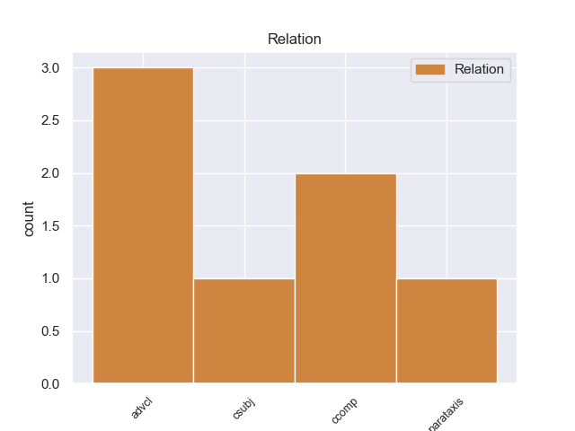
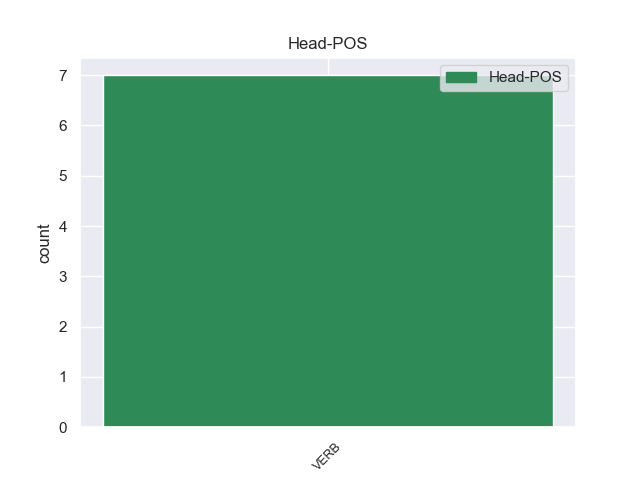
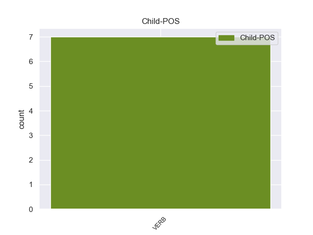

Distribution of features within this leaf



Agreement Rules sorted by frequency.
- When the dependent token is the adverbial clause modifier(advcl) of the head token, and the dependent token is VERB.
1 Tras _ _ _ _ 0 _ _ _
2 graduar _ _ _ _ 0 _ _ _
3 se _ _ _ _ 0 _ _ _
4 , _ _ _ _ 0 _ _ _
5 se _ _ _ _ 0 _ _ _
6 trasladó trasladar VERB _ Mood=Ind|Number=Sing|Person=3|Tense=Past|VerbForm=Fin 0 _ _ _
7 a _ _ _ _ 0 _ _ _
8 Nueva _ _ _ _ 0 _ _ _
9 York _ _ _ _ 0 _ _ _
10 para _ _ _ _ 0 _ _ _
11 acudir _ _ _ _ 0 _ _ _
12 a _ _ _ _ 0 _ _ _
13 la _ _ _ _ 0 _ _ _
14 Universidad _ _ _ _ 0 _ _ _
15 , _ _ _ _ 0 _ _ _
16 aunque _ _ _ _ 0 _ _ _
17 la _ _ _ _ 0 _ _ _
18 dejó dejar VERB _ Mood=Ind|Number=Sing|Person=3|Tense=Past|VerbForm=Fin 6 advcl _ _
19 antes _ _ _ _ 0 _ _ _
20 de _ _ _ _ 0 _ _ _
21 graduar _ _ _ _ 0 _ _ _
22 se _ _ _ _ 0 _ _ _
23 para _ _ _ _ 0 _ _ _
24 estudiar _ _ _ _ 0 _ _ _
25 interpretación _ _ _ _ 0 _ _ _
26 en _ _ _ _ 0 _ _ _
27 el _ _ _ _ 0 _ _ _
28 Circle _ _ _ _ 0 _ _ _
29 - _ _ _ _ 0 _ _ _
30 in _ _ _ _ 0 _ _ _
31 - _ _ _ _ 0 _ _ _
32 the _ _ _ _ 0 _ _ _
33 - _ _ _ _ 0 _ _ _
34 Square _ _ _ _ 0 _ _ _
35 Theatre _ _ _ _ 0 _ _ _
36 School _ _ _ _ 0 _ _ _
37 . _ _ _ _ 0 _ _ _
1 Era _ _ _ _ 0 _ _ _
2 un _ _ _ _ 0 _ _ _
3 centro _ _ _ _ 0 _ _ _
4 chií _ _ _ _ 0 _ _ _
5 que _ _ _ _ 0 _ _ _
6 pasó _ _ _ _ 0 _ _ _
7 horas _ _ _ _ 0 _ _ _
8 bajas _ _ _ _ 0 _ _ _
9 en _ _ _ _ 0 _ _ _
10 la _ _ _ _ 0 _ _ _
11 época _ _ _ _ 0 _ _ _
12 ayubí _ _ _ _ 0 _ _ _
13 ( _ _ _ _ 0 _ _ _
14 suní _ _ _ _ 0 _ _ _
15 ) _ _ _ _ 0 _ _ _
16 hasta _ _ _ _ 0 _ _ _
17 que _ _ _ _ 0 _ _ _
18 los _ _ _ _ 0 _ _ _
19 mamelucos _ _ _ _ 0 _ _ _
20 la _ _ _ _ 0 _ _ _
21 volvieron _ _ _ _ 0 _ _ _
22 a _ _ _ _ 0 _ _ _
23 impulsar _ _ _ _ 0 _ _ _
24 y _ _ _ _ 0 _ _ _
25 es ser VERB _ Mood=Ind|Number=Sing|Person=3|Tense=Pres|VerbForm=Fin 0 _ _ _
26 desde _ _ _ _ 0 _ _ _
27 aquella _ _ _ _ 0 _ _ _
28 época _ _ _ _ 0 _ _ _
29 que _ _ _ _ 0 _ _ _
30 goza gozar VERB _ Mood=Ind|Number=Sing|Person=3|Tense=Pres|VerbForm=Fin 25 csubj _ _
31 de _ _ _ _ 0 _ _ _
32 renombre _ _ _ _ 0 _ _ _
33 . _ _ _ _ 0 _ _ _
1 Le _ _ _ _ 0 _ _ _
2 pido pedir VERB _ Mood=Ind|Number=Sing|Person=1|Tense=Pres|VerbForm=Fin 0 _ _ _
3 que _ _ _ _ 0 _ _ _
4 lo _ _ _ _ 0 _ _ _
5 alise alisar VERB _ Mood=Sub|Number=Sing|Person=3|Tense=Pres|VerbForm=Fin 2 ccomp _ _
6 para _ _ _ _ 0 _ _ _
7 poder _ _ _ _ 0 _ _ _
8 salir _ _ _ _ 0 _ _ _
9 con _ _ _ _ 0 _ _ _
10 dignidad _ _ _ _ 0 _ _ _
11 . _ _ _ _ 0 _ _ _
Disagree Examples:
1 Aunque _ _ _ _ 0 _ _ _
2 tenían tener VERB _ Mood=Ind|Number=Plur|Person=3|Tense=Imp|VerbForm=Fin 10 advcl _ _
3 una _ _ _ _ 0 _ _ _
4 increíble _ _ _ _ 0 _ _ _
5 relación _ _ _ _ 0 _ _ _
6 peso _ _ _ _ 0 _ _ _
7 / _ _ _ _ 0 _ _ _
8 potencia _ _ _ _ 0 _ _ _
9 eso _ _ _ _ 0 _ _ _
10 hizo hacer VERB _ Mood=Ind|Number=Sing|Person=3|Tense=Past|VerbForm=Fin 0 _ _ _
11 que _ _ _ _ 0 _ _ _
12 su _ _ _ _ 0 _ _ _
13 vida _ _ _ _ 0 _ _ _
14 útil _ _ _ _ 0 _ _ _
15 fuese _ _ _ _ 0 _ _ _
16 muy _ _ _ _ 0 _ _ _
17 corta _ _ _ _ 0 _ _ _
18 . _ _ _ _ 0 _ _ _
1 Fui ser VERB _ Mood=Ind|Number=Sing|Person=3|Tense=Past|VerbForm=Fin 0 _ _ _
2 el _ _ _ _ 0 _ _ _
3 año _ _ _ _ 0 _ _ _
4 pasado _ _ _ _ 0 _ _ _
5 y _ _ _ _ 0 _ _ _
6 de _ _ _ _ 0 _ _ _
7 la _ _ _ _ 0 _ _ _
8 ruta _ _ _ _ 0 _ _ _
9 de _ _ _ _ 0 _ _ _
10 los _ _ _ _ 0 _ _ _
11 7 _ _ _ _ 0 _ _ _
12 lagos _ _ _ _ 0 _ _ _
13 fue _ _ _ _ 0 _ _ _
14 el _ _ _ _ 0 _ _ _
15 que _ _ _ _ 0 _ _ _
16 más _ _ _ _ 0 _ _ _
17 me _ _ _ _ 0 _ _ _
18 gusto _ _ _ _ 0 _ _ _
19 , _ _ _ _ 0 _ _ _
20 en _ _ _ _ 0 _ _ _
21 el _ _ _ _ 0 _ _ _
22 mes _ _ _ _ 0 _ _ _
23 de _ _ _ _ 0 _ _ _
24 enero _ _ _ _ 0 _ _ _
25 y _ _ _ _ 0 _ _ _
26 febrero _ _ _ _ 0 _ _ _
27 te _ _ _ _ 0 _ _ _
28 dan dar VERB _ Mood=Ind|Number=Plur|Person=3|Tense=Pres|VerbForm=Fin 1 parataxis _ _
29 la _ _ _ _ 0 _ _ _
30 cena _ _ _ _ 0 _ _ _
31 gratis _ _ _ _ 0 _ _ _
32 y _ _ _ _ 0 _ _ _
33 podes _ _ _ _ 0 _ _ _
34 hacer _ _ _ _ 0 _ _ _
35 un _ _ _ _ 0 _ _ _
36 montón _ _ _ _ 0 _ _ _
37 de _ _ _ _ 0 _ _ _
38 excursiones _ _ _ _ 0 _ _ _
39 organisadas _ _ _ _ 0 _ _ _
40 en _ _ _ _ 0 _ _ _
41 el _ _ _ _ 0 _ _ _
42 mismo _ _ _ _ 0 _ _ _
43 hostel _ _ _ _ 0 _ _ _
44 . _ _ _ _ 0 _ _ _
1 Eddin _ _ _ _ 0 _ _ _
2 agregó agregar VERB _ Mood=Ind|Number=Sing|Person=3|Tense=Past|VerbForm=Fin 0 _ _ _
3 que _ _ _ _ 0 _ _ _
4 en _ _ _ _ 0 _ _ _
5 Misrata _ _ _ _ 0 _ _ _
6 hay haber VERB _ Mood=Ind|Number=Sing|Person=3|Tense=Pres|VerbForm=Fin 2 ccomp _ _
7 un _ _ _ _ 0 _ _ _
8 hospital _ _ _ _ 0 _ _ _
9 privado _ _ _ _ 0 _ _ _
10 , _ _ _ _ 0 _ _ _
11 que _ _ _ _ 0 _ _ _
12 sigue _ _ _ _ 0 _ _ _
13 bajo _ _ _ _ 0 _ _ _
14 control _ _ _ _ 0 _ _ _
15 rebelde _ _ _ _ 0 _ _ _
16 , _ _ _ _ 0 _ _ _
17 aunque _ _ _ _ 0 _ _ _
18 " _ _ _ _ 0 _ _ _
19 está _ _ _ _ 0 _ _ _
20 cercado _ _ _ _ 0 _ _ _
21 por _ _ _ _ 0 _ _ _
22 las _ _ _ _ 0 _ _ _
23 fuerzas _ _ _ _ 0 _ _ _
24 de _ _ _ _ 0 _ _ _
25 Gadafi _ _ _ _ 0 _ _ _
26 que _ _ _ _ 0 _ _ _
27 impiden _ _ _ _ 0 _ _ _
28 la _ _ _ _ 0 _ _ _
29 entrada _ _ _ _ 0 _ _ _
30 de _ _ _ _ 0 _ _ _
31 provisiones _ _ _ _ 0 _ _ _
32 y _ _ _ _ 0 _ _ _
33 han _ _ _ _ 0 _ _ _
34 cortado _ _ _ _ 0 _ _ _
35 la _ _ _ _ 0 _ _ _
36 electricidad _ _ _ _ 0 _ _ _
37 " _ _ _ _ 0 _ _ _
38 . _ _ _ _ 0 _ _ _